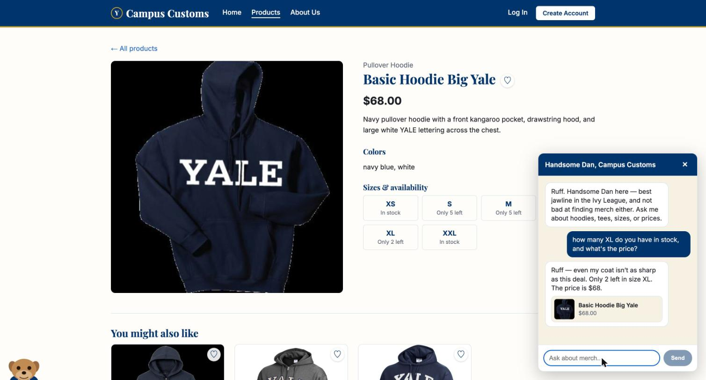
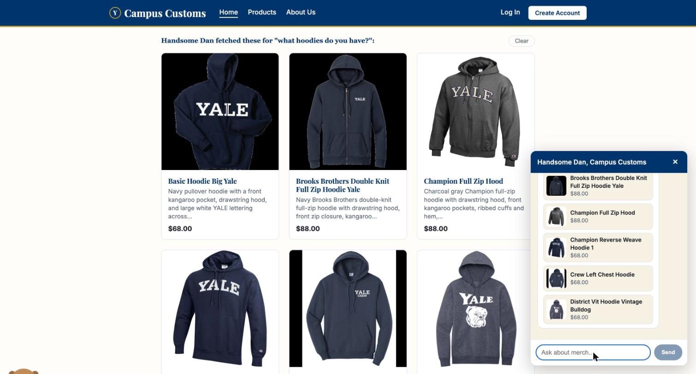
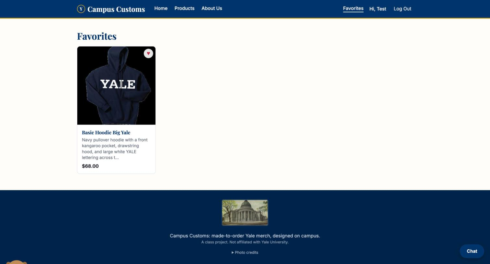

Chat: inventory level of an item

Asked the chat, on the Basic Hoodie Big Yale's own page, "how many XL do you have in stock,
and what's the price?" Handsome Dan replied "Only 2 left in size XL. The price is
$68" — which matches the page's own size grid shown behind the chat panel (XL:
Only 2 left) and the database exactly (inventory: XL quantity = 2;
catalogue: price = $68.00). Not a guess — the reply came from
check_stock querying the live database (Problem 6), not from the model's memory.
Dynamic search-result cards after a category question

Asked "what hoodies do you have?" from the Home page. The agent searched the catalogue and
returned six real hoodies; the front end rendered them as full product cards
directly on the page (above the "Shop by style" section, not just as small
cards inside the chat bubble) — the Problem 7 API contract, where the agent's structured
product_ids become real, clickable catalogue cards. (This screenshot also
caught and proved a real bug: the catalogue only ever says "hoodie," never "hoodies," so a
plain substring search returned zero matches the first time this check was run. Fixed in
tools.py by normalizing simple plurals before matching — this screenshot is
the re-run after that fix.)
Usability feature from Problem 9: Favorites

Signed in as the seeded test account, favorited the Basic Hoodie Big Yale from its product
page (the heart icon), then opened /favorites. The saved item is there,
persisted to the database (a new favorites table, not browser
storage) — so it would reload the same way on any device that shopper logs into. One of the
two front-end usability improvements built in Problem 9.